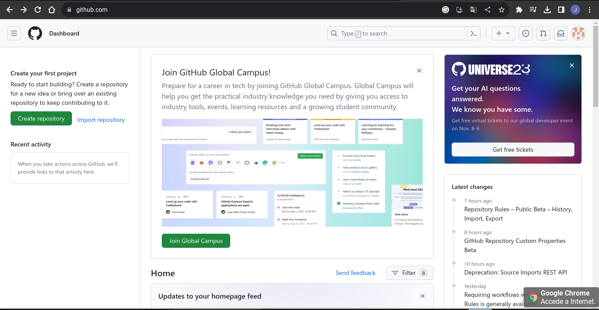
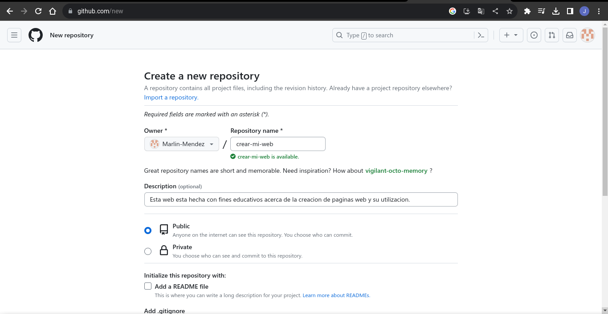
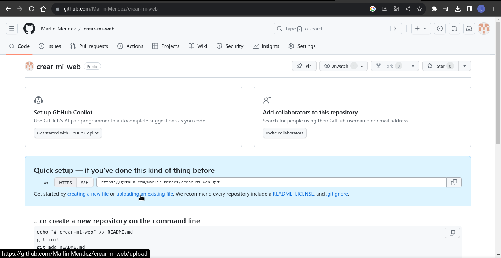
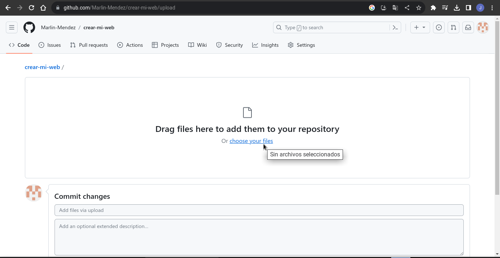
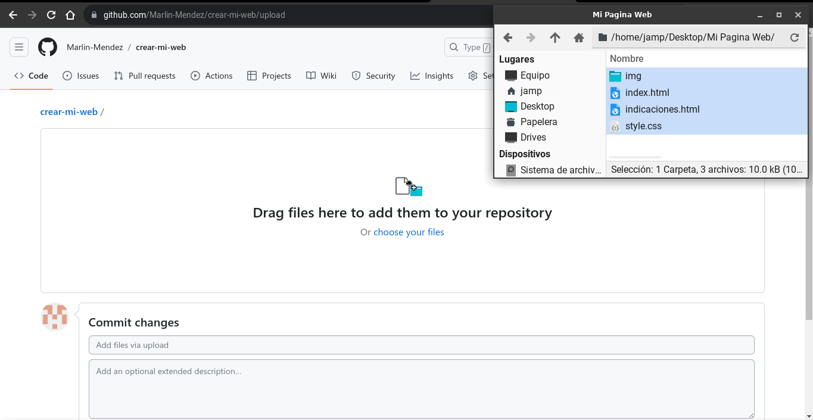
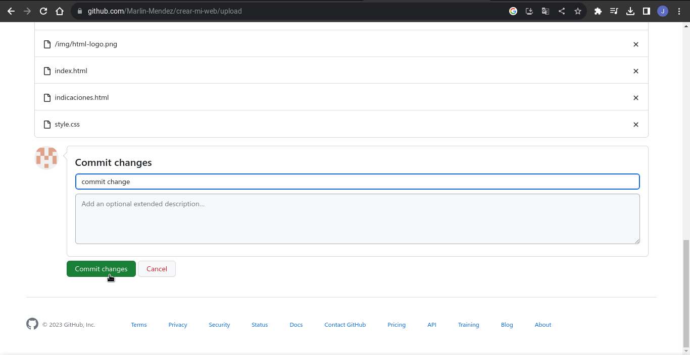
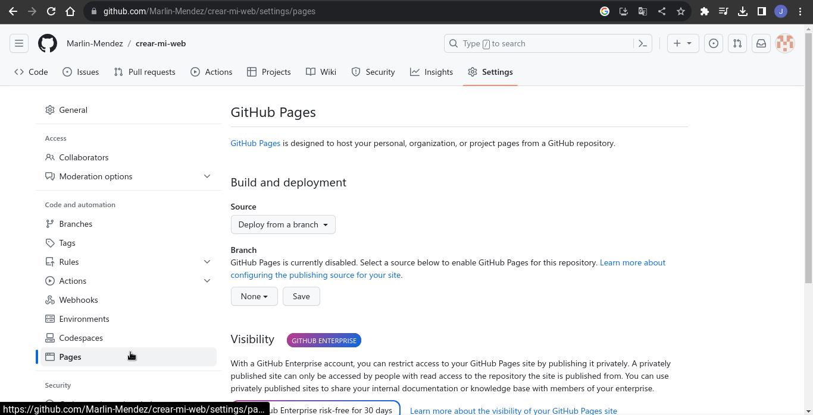
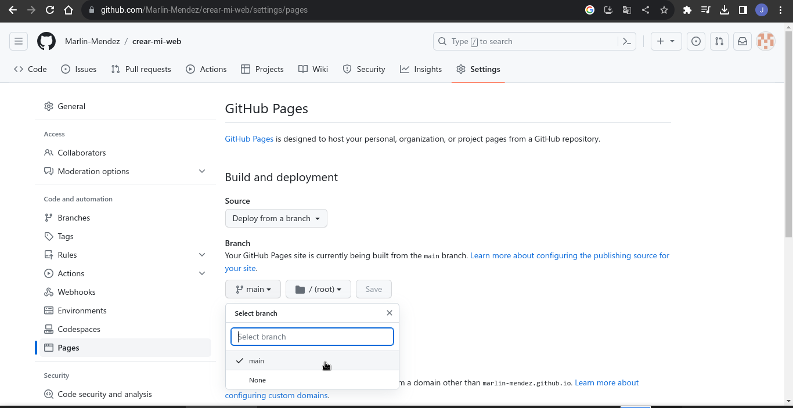
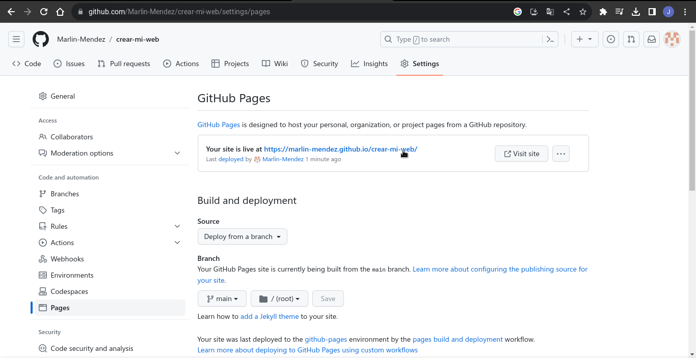

¿Qué es GitHub.
Github es un repositorio online gratuito que permite gestionar proyectos y controlar versiones de
código del cuál específicamente se utiliza para GitHub Pages el cual es un servicio
de alojamiento de sitio estático que toma archivos HTML y CSS directamente desde un repositorio en
GitHub.(Click en la imagen para para mas información) .

PASO 1: CREAR REPOSITORIO
Los repositorios digitales son básicamente archivos donde se almacenan recursos digitales para que puedan
ser consultados a través de internet para crear uno en github inicialmente tenemos que seleccionar la
opción de create repository.

PASO 2: COLOCAR NOMBRE Y MANTENER CAMBIOS
El nombre que se le proporcione al repositorio es como lo identificaremos en la url cuando ingresemos, en
este caso no hace falta más que colocar el nombre y mantener la configuración, seguimos hasta abajo y le
damos a crear

PASO 3: CARGAMOS NUESTRA CARPETA
Cargamos la carpeta en la que tenemos nuestra página web en la opción de uploading an existing
file.

PASO 4: SELECCIONAMOS OPCION PARA SELECCIONAR NUESTRA CARPETA
Seleccionamos la opción de choose your files.

PASO 5: SELECCIONAMOS NUESTROS ARCHIVOS
El orden en este paso es uno de los más fundamentales, puesto que con el mínimo error no tendremos
resultados y por ello es que en un inicio se dio a conocer que se tenía que crear él index ya
que el GitHub reconoce este como el inicio de nuestra página siendo la primer opción para ejecutar..

PASO 6: GUARDAMOS NUESTROS ARCHIVOS
Ya con nuestros archivos subidos, agregamos un comentario como commit change y le damos al botón de
commit changes.

PASO 8: PAGES
Nos dirigimos al apartado de Pages

PASO 9: MAIN
Cambiamos la opción de None a Main.

PASO 10: URL GITHUBPAGES
Luego de esperar unos minutos después de la subida de nuestros archivos se generara la URL que nos
simulara la página dentro de un servidor
